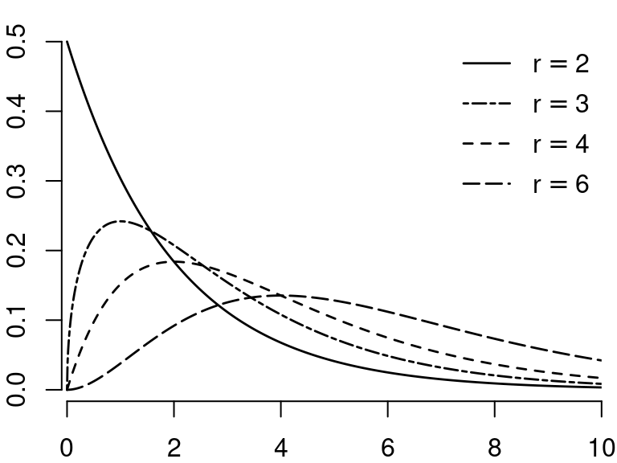
3 Dependence
3.1 Multivariate random variables
In statistics, we typically study multiple random variables simultaneously. We can collect k random variable X_1, \ldots, X_k in a random vector X = \begin{pmatrix} X_1 \\ \vdots \\ X_k \end{pmatrix}= (X_1, \ldots, X_k)'. We also call X a k-variate random variable.
Since X is a random vector, its outcome is also vector-valued, e.g. X = x \in \mathbb R^k with x=(x_1, \ldots, x_k)'. Events of the form \{X \leq x\} mean that each component of the random vector X is smaller than the corresponding values of the vector x, i.e. \{X \leq x\} = \{X_1 \leq x_1, \ldots, X_k \leq x_k\}.
3.2 Bivariate random variables
If k = 2, we call X a bivariate random variable. Consider, for instance, the coin toss Bernoulli variable Y with P(Y=1) = 0.5 and P(Y=0) = 0.5, and let Z be a second coin toss with the same probabilities. X = (Y,Z) is a bivariate random variable where both entries are discrete random variables. Since the two coin tosses are performed separately from each other, it is reasonable to assume that the probability that the first and second coin tosses show ‘heads’ is 0.25, i.e., P(\{Y=1\} \cap \{Z=1\}) = 0.25. We would expect the following joint probabilities:
| Z=1 | Z=0 | any result | |
| Y=1 | 0.25 | 0.25 | 0.5 |
| Y=0 | 0.25 | 0.25 | 0.5 |
| any result | 0.5 | 0.5 | 1 |
The probabilities in the above table characterize the joint distribution of Y and Z. The table shows the values of the joint probability mass function: \pi_{YZ}(a,b) = \begin{cases} 0.25 & \text{if} \ a \in \{0,1\} \ \text{and} \ b \in \{0,1\} \\ 0 & \text{otherwise} \end{cases} Another example are the random variables Y, a dummy variable for the event that the person has a high wage (more than 25 USD/hour), and Z, a dummy variable for the event that the same person has a university degree. Similarly, X = (Y,Z) is a bivariate random variable consisting of two univariate Bernoulli variables. The joint probabilities might be as follows:
| Z=1 | Z=0 | any education | |
| Y=1 | 0.19 | 0.12 | 0.31 |
| Y=0 | 0.17 | 0.52 | 0.69 |
| any wage | 0.36 | 0.64 | 1 |
The joint probability mass function is \pi_{YZ}(a,b) = \begin{cases} 0.19 & \text{if} \ a=1, b=1, \\ 0.12 & \text{if} \ a=1, b=0, \\ 0.17 & \text{if} \ a=0, b=1, \\ 0.52 & \text{if} \ a=0, b=0, \\ 0 & \text{otherwise.} \end{cases} The marginal probability mass function of Y is \begin{align*} \pi_Y(a) &= P(Y=a) = \pi_{YZ}(a,0) + \pi_{YZ}(a,1) \\ &= \begin{cases} 0.19 + 0.12 = 0.31 & \text{if} \ a = 1, \\ 0.17 + 0.52 = 0.69 & \text{if} \ a = 0, \\ 0 & \text{otherwise.} \end{cases} \end{align*} and the marginal probability mass function of Z is \begin{align*} \pi_Z(b) &= P(Z=b) = \pi_{YZ}(0,b) + \pi_{YZ}(1,b) \\ &= \begin{cases} 0.19 + 0.17 = 0.36 & \text{if} \ b = 1, \\ 0.12 + 0.52 = 0.64 & \text{if} \ b = 0, \\ 0 & \text{otherwise.} \end{cases} \end{align*}
An example of a continuous bivariate random variable is X = (Y,Z), where Y is the wage level in EUR/hour and Z is the labor market experience of the same person measured in years.
3.3 Bivariate distributions
Bivariate distribution
The joint distribution function of a bivariate random variable (Y,Z) is
F_{YZ}(a, b) = P(Y \leq a, Z \leq b) = P(\{Y \leq a\} \cap \{ Z \leq b\}).
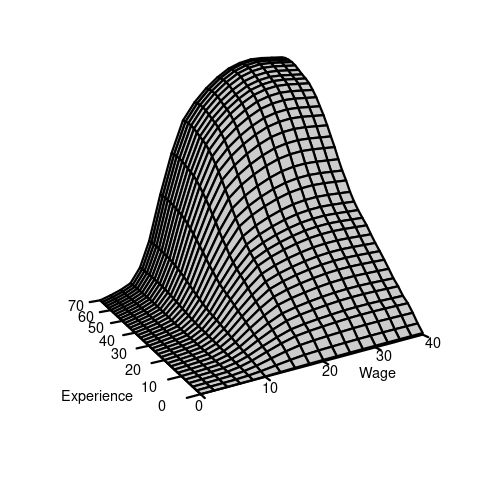
Calculation of probabilities using a bivariate distribution function: \begin{align*} P(Y \leq a, Z \leq b) &= F_{YZ}(a,b) \\ P(a < Y \leq b, c < Z \leq d) &= F_{YZ}(b,d) - F_{YZ}(b,c) - F_{YZ}(a,d) + F_{YZ}(a,c) \end{align*}
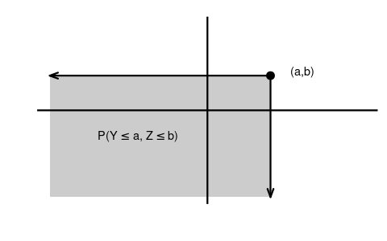
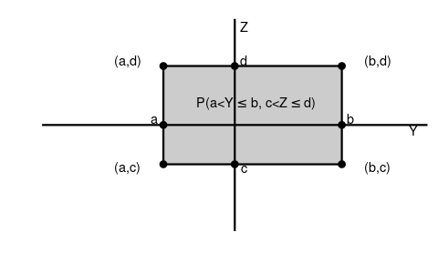
Marginal distributions
The marginal distributions of Y and Z are \begin{align*} F_Y(a) = P(Y \leq a) &= P(Y \leq a, Z < \infty) &= \lim_{b \to \infty} F_{YZ}(a,b),\\ F_Z(b) = P(Z \leq b) &= P(Y < \infty, Z \leq b) &= \lim_{a \to \infty} F_{YZ}(a,b) \end{align*}
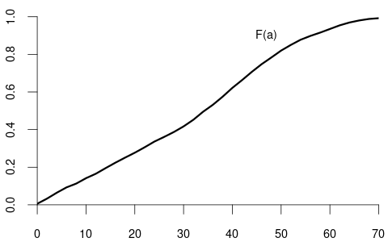
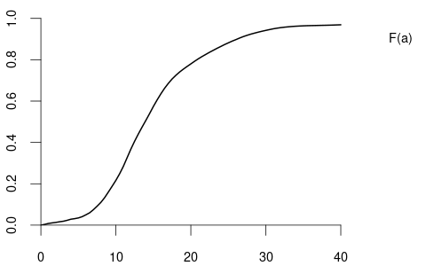
Bivariate density function
The joint density function of a bivariate continuous random variable (Y,Z) with differentiable joint CDF F_{YZ}(a,b) equals f_{YZ}(a,b) = \frac{\partial^2}{\partial a \partial b} F_{YZ}(a,b).
The marginal densities of Y and Z are \begin{align*} f_Y(a) &= \frac{d}{d a} F_Y(a) = \int_{-\infty}^\infty f_{YZ}(a,b)\text{d}b, \\ f_Z(b) &= \frac{d}{d b} F_Z(b) = \int_{-\infty}^\infty f_{YZ}(a,b)\text{d}a. \end{align*}
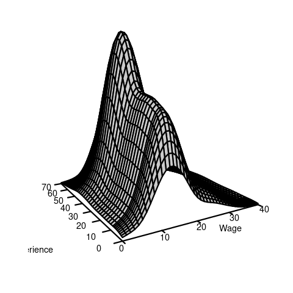
3.4 Correlation
Consider the bivariate continuous random variable (Y,Z) with joint density f_{YZ}(a,b). The expected value of g(Y,Z), where g(\cdot, \cdot) is any real-valued function, is given by E[g(X,Y)] = \int_{-\infty}^\infty \int_{-\infty}^\infty g(a,b) f_{YZ}(a,b) \ \text{d}a \ \text{d}b.
The first cross moment of Y and Z is E[YZ]. We have E[YZ] = E[g(Y,Z)] for the function g(Y,Z) = Y\cdot Z. Therefore,
E[YZ] = \int_{-\infty}^\infty \int_{-\infty}^\infty ab f_{YZ}(a,b) \ \text{d}a \ \text{d}b.
The covariance of Y and Z is defined as
Cov(Y,Z) = E[(Y- E[Y])(Z-E[Z])] = E[YZ] - E[Y]E[Z].
The covariance of Y and Y is the variance:
Cov(Y,Y) = Var[Y].
The variance of the sum of two random variables depends on the covariance:
Var[Y+Z] = Var[Y] + 2 Cov(Y,Z) + Var[Z]
The correlation of Y and Z is
Corr(Y,Z) = \frac{Cov(Y,Z)}{sd(Y) sd(Z)}
Uncorrelated
Y and Z are uncorrelated if Corr(Y,Z) = 0, or, equivalently, if Cov(Y,Z) = 0.
If Y and Z are uncorrelated, we have \begin{align*} E[YZ] &= E[Y] E[Z] \\ var[Y+Z] &= var[Y] + var[Z] \end{align*}
3.5 Independence
Two events A and B are independent if P[A \cap B] = P[A] P[B]. For instance, in the bivariate random variable of Table 3.1 (two coin tosses), we have P(Y=1, Z=1) = 0.25 = 0.5 \cdot 0.5 = P(Y=1)P(Z=1). Hence, \{Y=1\} and \{Z=1\} are independent events. In the bivariate random variable of Table 3.2 (wage/education), we find P(Y=1, Z=1) = 0.19 \neq P(Y=1)P(Z=1) = 0.31 \cdot 0.36 = 0.1116. Therefore, the two events are not independent. In this case, the two random variables are dependent.
Independence
Y and Z are independent random variables if, for all a and b, the bivariate distribution function is the product of the marginal distribution functions: F_{YZ}(a,b) = F_Y(a) F_Z(b). If this property is not satisfied, we say that X and Y are dependent.
The random variables Y and Z of Table 3.1 are independent, and those of Table 3.2 are dependent.
If Y and Z are independent and have finite second moments, then Y and Z are uncorrelated. The reverse is not true!
3.6 Random vectors
The above concepts can be generalized to any k-variate random vector X = (X_1, \ldots, X_k). The joint CDF of X is F_X(x) = P(X_1 \leq x_1, \ldots, X_k \leq x_k). X has independent entries if F_X(x) = \prod_{i=1}^k P(X_i \leq x_i) = \prod_{i=1}^k F_{X_i}(x_i) If F_X(x) is a continuous CDF, the joint k-dimensional density is f_X(x) = f_X(x_1, \ldots, x_k) = \frac{\partial^k}{\partial x_1 \cdots \partial x_k} F_X(x_1, \ldots ,x_k).
The expectation vector of X is E[X] = \begin{pmatrix} E[X_1] \\ \vdots \\ E[X_k] \end{pmatrix}, and the covariance matrix of X is \begin{align*} Var[X] &= E[(X-E[X])(X-E[X])'] \\ &= \begin{pmatrix} Var[X_1] & Cov(X_1, X_2) & \ldots & Cov(X_1, X_k) \\ Cov(X_2, X_1) & Var[X_2] & \ldots & Cov(X_2, X_k) \\ \vdots & \vdots & \ddots & \vdots \\ Cov(X_k, X_1) & Cov(X_k, X_2) & \ldots & Var[X_k] \end{pmatrix} \end{align*}
For any random vector X, the covariance matrix Var[X] is symmetric and positive semi-definite.
3.7 Conditional distributions
Conditional probability
The conditional probability of an event A given an event B with P(B) > 0 is P(A \mid B) = \frac{P(A \cap B)}{P(B)}
Let’s revisit the wage and schooling example from Table 3.2: P(Y=1 \mid Z=1) = \frac{P(\{Y=1\}\cap \{Z=1\})}{P(Z=1)} = \frac{0.19}{0.36} = 0.53 P(Y=1 \mid Z=0) = \frac{P(\{Y=1\}\cap \{Z=0\})}{P(Z=0)} = \frac{0.12}{0.64} = 0.19
Note that P(Y=1 \mid Z=1) = 0.53 > 0.31 = P(Y=1) implies P(\{Y=1\}\cap \{Z=1\}) > P(Y=1) \cdot P(Z=1). If P(A \mid B) = P(A), then the events A and B are independent. If P(A \mid B) \neq P(A), they are dependent.
Conditional distribution of continuous variables
Consider the density f_{YZ}(a,b) of two continuous random variables Y and Z. The conditional density of Y given Z=b is f_{Y|Z}(a \mid b) = \frac{f_{YZ}(a,b)}{f_Z(b)}. The conditional distribution of Y given Z=b is F_{Y|Z}(a \mid b) = \int_0^a f_{Y|Z}(u \mid b) \ \text{d}u.
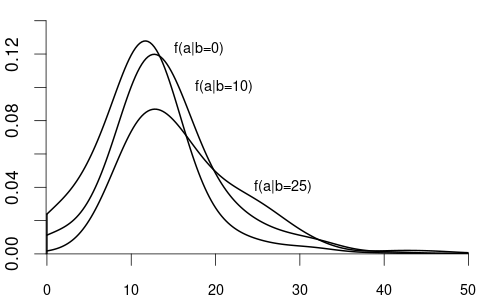
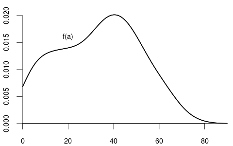
If Y is continuous and Z is discrete, the conditional distribution function of Y given \{Z=b\} with P(Z=b) > 0 is F_{Y|Z}(a \mid b) = P(Y \leq a \mid Z=b) = \frac{P(Y \leq a, Z=b)}{P(Z=b)}.
If F_{Y|Z}(a \mid b) is differentiable with respect to b, the conditional density of Y given Z=b is f_{Y|Z}(a \mid b) = \frac{\partial}{\partial a} F_{Y|Z}(a \mid b).
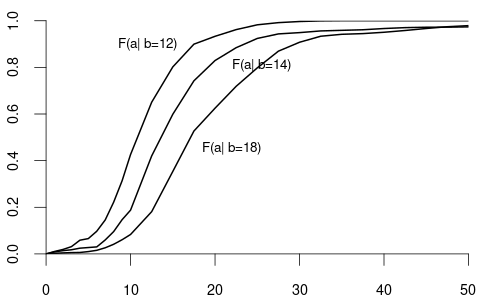
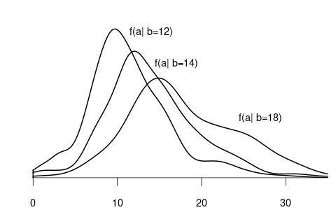
We often are interested in conditioning on multiple variables, such as the wage given a particular education and experience level. Let f(y,x) = f(y,x_1, \ldots, x_k) be the joint density of the composite random vector (Y, X_1, \ldots, X_k) with X = (X_1, \ldots, X_k). The conditional density of a random variable Y given X = x = (x_1, \ldots, x_k)' is f_{Y|X}(y \mid x) = f(y \mid x_1, \ldots, x_k) = \frac{f(y, x_1, \ldots, x_k)}{f_X(x_1, \ldots, x_k)} = \frac{f(y,x)}{f_X(x)} The conditional distribution of Y given X=x is F_{Y|X}(y\mid x) = \int_0^y f(u \mid x)\ \text{d}u.
3.8 Conditional expectation
Conditional expectation function
The conditional expectation of Y given X=x is the expected value of the distribution F_{Y|X}(y \mid x). For continuous Y with conditional density f_{Y|X}(y \mid x), the conditional expectation is
E[Y \mid X=x] = \int_{-\infty}^\infty y f_{Y|X}(y \mid x)\ \text{d}y.
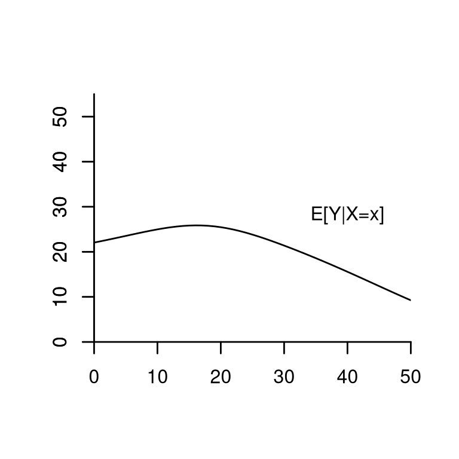
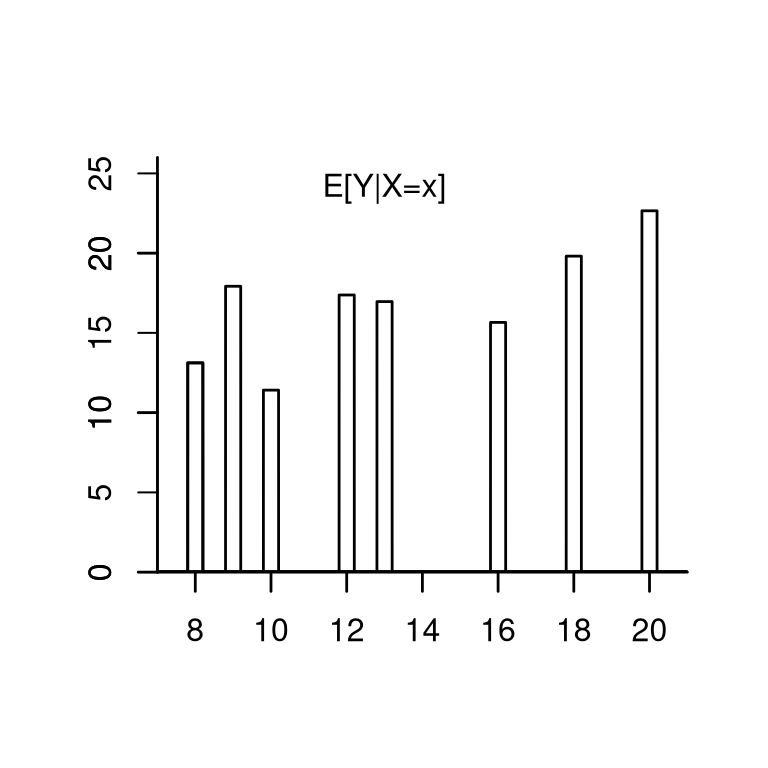
Consider again the wage and experience example. Suppose that the conditional expectation has the functional form E[wage \mid experience = x ] = m(x) = 14.5 + 0.9 x - 0.017 x^2. E.g., for x=10 we have E[wage \mid experience = 10] = m(10) = 21.8.
Note that m(x) = E[wage \mid experience = x] is not random. It is a feature of the joint distribution.
Sometimes, it is useful not to fix the experience level to a certain value but to treat it as random:
\begin{align*} E[wage \mid experience] &= m(experience) \\ &= 14.5 + 0.9 experience - 0.017 experience^2 \end{align*}
m(experience) = E[wage \mid experience] is a function of the random variable experience and, therefore, itself a random variable.
The conditional expectation function (CEF) of Y given the specific event \{X=x\} is m(x) = E[Y \mid X=x]. m(x) is deterministic (non-random) and a feature of the joint distribution.
The conditional expectation function (CEF) of Y given the random vector X is m(X) = E[Y \mid X]. m(X) is a function of the random vector X and therefore itself a random variable.
3.9 Law of iterated expectations
Rules of calculation for the conditional expectation
Let Y be a random variable and X a random vector.
Law of the iterated expectations (LIE): E[E[Y \mid X]] = E[Y]. A more general LIE: For any two random vectors X and \widetilde X, E[E[Y \mid X, \widetilde X] \mid X] = E[Y \mid X].
Conditioning theorem (CT): For any function g(\cdot), E[g(X) Y \mid X] = g(X) E[Y \mid X].
If Y and X are independent then E[Y \mid X] = E[Y].
3.10 Conditional variance
Conditional variance
If E[Y^2] < \infty, the conditional variance of Y given the event \{X=x\} is Var[Y \mid X=x] = E[(Y-E[Y \mid X=x])^2 \mid X=x].
The conditional variance of Y given the random vector X is Var[Y \mid X] = E[(Y-E[Y \mid X])^2 \mid X].
3.11 Best predictor
A typical application is to find a good prediction for the outcome of a random variable Y. Recall that the expected value E[Y] is the best predictor for Y in the sense that g^* = E[Y] minimizes E[(Y-g)^2].
With the knowledge of an additional random vector X, we can use the joint distribution of Y and X to improve the prediction of Y.
It turns out that the CEF m(X) = E[Y \mid X] is the best predictor for Y given the information contained in the random vector X:
Best predictor
If E[Y^2] < \infty, then the CEF m(X) = E[Y \mid X] minimizes the expected squared error E[(Y-g(X))^2] among all predictor functions g(X).
Let us find the function g(\cdot) that minimizes E[(Y-g(X))^2]:
\begin{align*} &E[(Y-g(X))^2] = E[(Y-m(X) + m(X) - g(X))^2] \\ &= \underbrace{E[(Y-m(X))^2]}_{=(i)} + 2\underbrace{E[(Y-m(X))(m(X) - g(X))]}_{=(ii)} + \underbrace{E[(m(X) - g(X))^2]}_{(iii)} \end{align*}
The first term (i) does not depend on g(\cdot) and is finite if E[Y^2] < \infty.
For the second term (ii), we use the LIE and CT: \begin{align*} &E[(Y-m(X))(m(X) - g(X))] \\ &= E[E[(Y-m(X))(m(X) - g(X))\mid X]] \\ &= E[E[Y-m(X)\mid X](m(X) - g(X))] \\ &= E[(\underbrace{E[Y\mid X]}_{=m(X)} - m(X))(m(X) - g(X))] = 0 \end{align*}
The third term (iii) E[(m(X) - g(X))^2] is minimal if m(\cdot) = g(\cdot)
Therefore, m(X) = E[Y\mid X] minimizes E[(Y-g(X))^2].
The best predictor for Y given X is m(X)= E[Y \mid X], but Y can typically only partially be predicted. We have a prediction error (CEF error) e = Y - E[Y \mid X]. The conditional expectation of the CEF error does not depend on X and is zero: \begin{align*} E[e \mid X] &= E[(Y - m(X)) \mid X] \\ &= E[Y \mid X] - E[m(X) \mid X] \\ &= m(X) - m(X) = 0 \end{align*}
We say that Y is conditional mean independent of Z if E[Y \mid Z] does not depend on Z.
If Y and Z are independent, they are also conditional mean independent, but not necessarily vice versa. If Y and Z are conditional mean independent, they are also uncorrelated, but not necessarily vice versa.
Since the CEF is the best predictor of Y, it is of great interest to study the CEF in practice. Much of the statistical and econometric research deals with methods to approximate and estimate the CEF. This field of statistics is called regression analysis.
Consider the following model for Y and X: Y = m(X) + e, \quad E[e \mid X] = 0. \tag{3.1} We call m(\cdot) regression function and e error term.
From equation Equation 3.1 it follows that E[Y \mid X] = E[m(X) + e \mid X] = E[m(X) \mid X] + E[e \mid X] = m(X). I.e., the nonparametric regression model is a model for the CEF.
If m(\cdot) is a linear function, then Equation 3.1 is a linear regression model. We will study this model in detail in the next sections.
3.12 Combining normal variables
Some of the distributions commonly encountered in econometrics are combinations of univariate normal distributions, such as the multivariate normal, chi-squared, Student t, and F distributions.
3.12.1 \chi^2-distribution
Let Z_1, \ldots, Z_m be independent \mathcal N(0,1) random variables. Then, the random variable Y = \sum_{i=1}^m Z_i^2 is chi-square distributed with parameter m, written Y \sim \chi^2_m.
The parameter m is called the degrees of freedom.
Expectation and variance: E[Y] = m, \quad var[Y] = 2m
3.12.2 F-distribution
If Q_1 \sim \chi^2_m and Q_2 \sim \chi^2_r, and if Q_1 and Q_2 are independent, then Y = \frac{Q_1/m}{Q_2/r} is F-distributed with parameters m and r, written Y \sim F_{m,r}.
The parameter m is called the degrees of freedom in the numerator; r is the degree of freedom in the denominator.
If r \to \infty then the distribution of mY approaches \chi^2_m
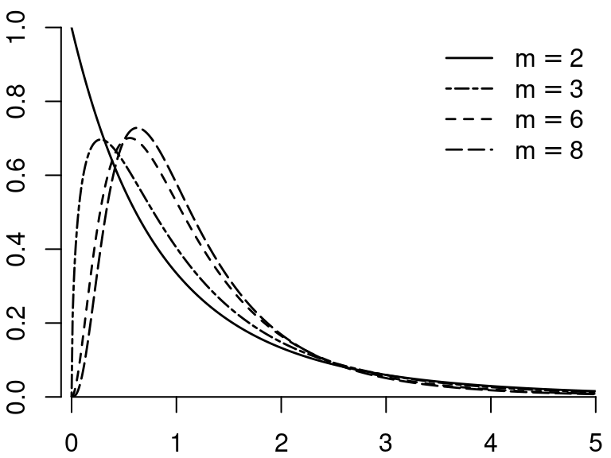
3.12.3 Student t-distribution
If Z \sim \mathcal N(0,1) and Q \sim \chi^2_m, and Z and Q are independent, then Y = \frac{Z}{\sqrt{Q/m}} is t-distributed with parameter m degrees of freedom, written Y \sim t_m.
Expectation, variance, and moments: E[Y] = 0 \quad (\text{if} \ m \geq 2), var[Y] = \frac{m}{m-2} \quad (\text{if} \ m \geq 3) The first m-1 moments are finite: E[|Y|^r] < \infty for r \leq m-1 and E[|Y|^r] = \infty for r \geq m.
The t-distribution with m=1 is also called Cauchy distribution. The t-distributions with 1, 2, 3, and 4 degrees of freedom are heavy-tailed distributions. If m \to \infty then t_m \to \mathcal N(0,1)
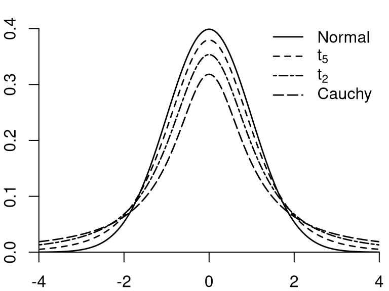
3.12.4 Multivariate normal distribution
Let X_1, \ldots, X_k be independent \mathcal N(0,1) random variables. Then, the k-vector X = (X_1, \ldots, X_k)' has the multivariate standard normal distribution, written X \sim \mathcal N(\boldsymbol 0, \boldsymbol I_k). Its joint density is f(x) = \frac{1}{(2 \pi)^{k/2}} \exp\left( - \frac{x'x}{2} \right).
If X \sim \mathcal N(\boldsymbol 0, \boldsymbol I_k) and \widetilde X = \mu + \boldsymbol B X for a q \times 1 vector \mu and a q \times k matrix \boldsymbol B, then \widetilde X has a multivariate normal distribution with parameters \mu and \Sigma = \boldsymbol B \boldsymbol B', written \widetilde X \sim \mathcal N(\mu, \Sigma). Its joint density is f(x) = \frac{1}{(2 \pi)^{k/2} (\det(\Sigma))^{1/2} } \exp\Big(- \frac{1}{2}(x-\mu)'\Sigma^{-1} (x-\mu) \Big).
The expectation vector and covariance matrix are E[\widetilde X] = \mu, \quad var[\widetilde X] = \Sigma.
3.12.5 R-commands for parametric distributions
| get CDF F(a) |
quantile function q(p) |
generate n independent random numbers |
|
|---|---|---|---|
| \mathcal N(0,1) | pnorm(a) |
qnorm(p) |
rnorm(n) |
| \chi^2_r | pchisq(a,r) |
qchisq(p,r) |
rchisq(n,r) |
| t_r | pt(a,r) |
qt(p,r) |
rt(n,r) |
| F_{r,k} | pf(a,r,k) |
qf(p,r,k) |
rf(n,r,k) |
3.13 Additional reading
- Stock and Watson (2019), Section 2
- Hansen (2022a), Section 4
- Hansen (2022b), Section 2
- Davidson and MacKinnon (2004), Section 1